Overland from Kathmandu · Helicopter from Lucknow · Tour via Lhasa · Private
Complete the sacred 3-day Kailash Parikrama and take the holy dip in Lake Mansarovar with a licensed team that has guided pilgrims since 2008. Full-Moon departures May – September 2027.
Free personalised itinerary & quote — usually within minutes. · Call +1 (510) 736-9933
2027 package prices · per person, twin sharing · full payment
Every package includes Lake Mansarovar darshan and the full 3-day Kailash Parikrama over Dolma La (5,630 m). The difference is how you get there.
Answer three quick questions and we'll suggest the best package for you.
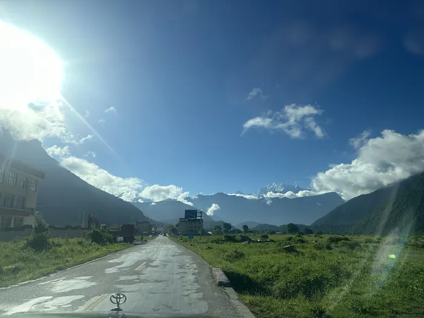
OverlandMost Popular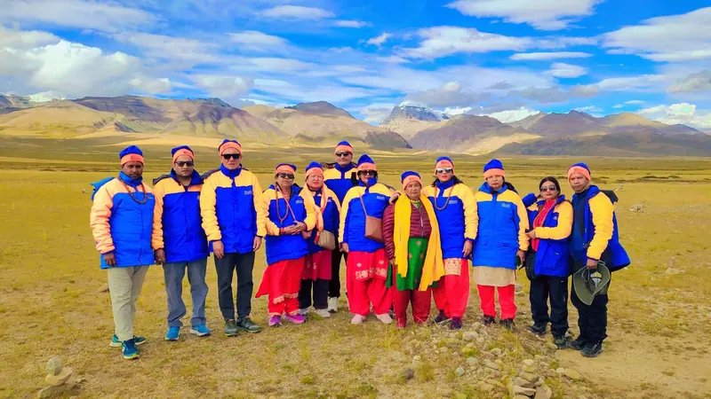
Overland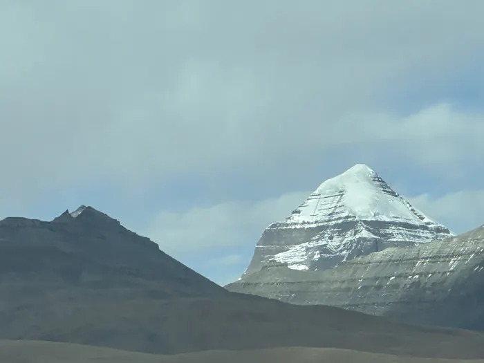
HelicopterFull-Moon departures put you at Lake Mansarovar on Purnima — the most auspicious night of the month. One clear price per package, no hidden charges.
| Batch | Kathmandu arrival | Price (pp) | Status | |
|---|---|---|---|---|
| Buddha Purnima batchMay 2027 · FM at Mansarovar | No Indian batch 14 May NRI / Foreign · 14 days | USD 1,999NRI / Foreign | Open | Reserve |
| May 2027 batchRegular departure | 27 May Indian · 13 days 26 May NRI / Foreign · 14 days | ₹ 2,49,000USD 1,999 NRI / Foreign | Open | Reserve |
| Full Moon batchJun 2027 · FM at Mansarovar | 13 Jun Indian · 13 days 12 Jun NRI / Foreign · 14 days | ₹ 2,49,000USD 1,999 NRI / Foreign | Open | Reserve |
| Jun 2027 batchRegular departure | 24 Jun Indian · 13 days 23 Jun NRI / Foreign · 14 days | ₹ 2,49,000USD 1,999 NRI / Foreign | Open | Reserve |
| Guru Purnima batchJul 2027 · FM at Mansarovar | 13 Jul Indian · 13 days 12 Jul NRI / Foreign · 14 days | ₹ 2,49,000USD 1,999 NRI / Foreign | Open | Reserve |
| Jul 2027 batchRegular departure | 22 Jul Indian · 13 days 21 Jul NRI / Foreign · 14 days | ₹ 2,49,000USD 1,999 NRI / Foreign | Open | Reserve |
| Shravan Purnima batchAug 2027 · FM at Mansarovar | 12 Aug Indian · 13 days 11 Aug NRI / Foreign · 14 days | ₹ 2,49,000USD 1,999 NRI / Foreign | Open | Reserve |
| Aug 2027 batchRegular departure | 26 Aug Indian · 13 days 25 Aug NRI / Foreign · 14 days | ₹ 2,49,000USD 1,999 NRI / Foreign | Open | Reserve |
| Full Moon batchSep 2027 · FM at Mansarovar | 10 Sep Indian · 13 days 09 Sep NRI / Foreign · 14 days | ₹ 2,49,000USD 1,999 NRI / Foreign | Open | Reserve |
| Helicopter (09 Days)Ex. Lucknow · via Simikot – Hilsa | Dates on requestMay – Sep 2027 | USD 3,080 | On request | Ask dates |
| Kailash Tour via Lhasa (15 Days) | Dates on requestMay – Sep 2027 | On request | On request | Ask dates |
Tell us your preferred month and number of pilgrims — we'll confirm availability and send an exact quote, usually within minutes.
Check availability on WhatsApp Send an inquiryMount Kailash (6,638 m) is revered by four religions — Hinduism as the abode of Lord Shiva and Parvati, Buddhism as the home of Demchok, Jainism as Ashtapad where Rishabhadeva attained liberation, and the ancient Bon faith as the axis of the world. No human has ever climbed it; pilgrims instead walk the 52 km Parikrama (Kora), believed to cleanse the sins of a lifetime.
Nearby, Lake Mansarovar (4,558 m) — the highest freshwater lake in the world — was created in the mind of Lord Brahma. A holy dip and puja on its shores, especially under the Full Moon (Purnima), is considered one of the most auspicious acts a pilgrim can perform.
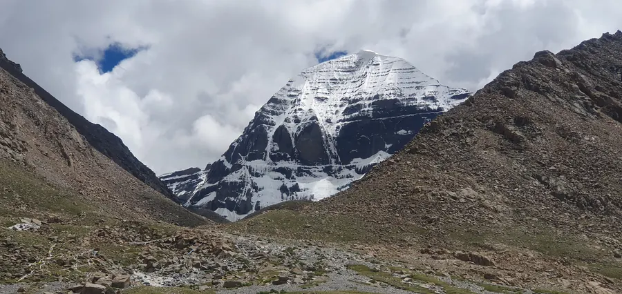
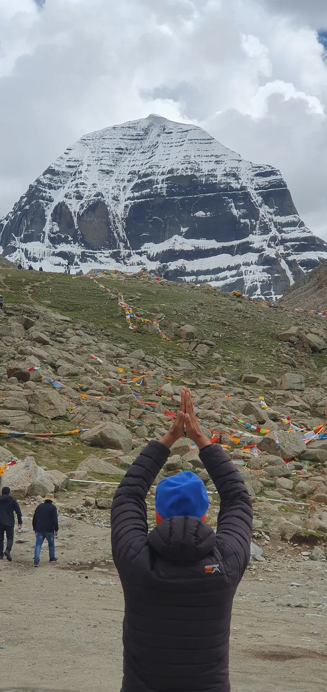
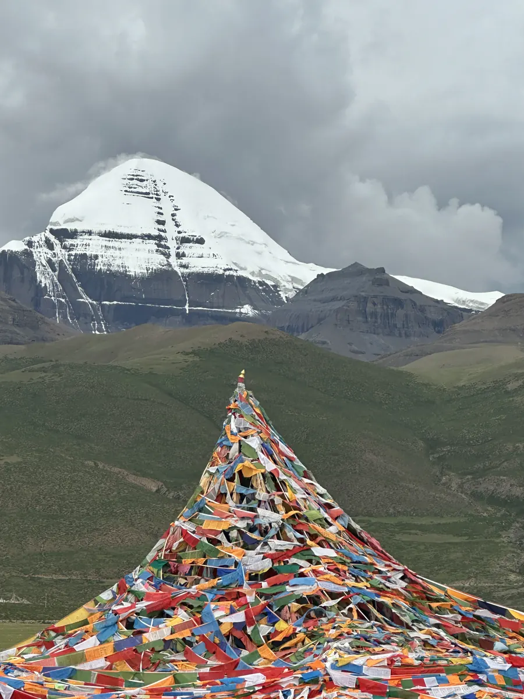
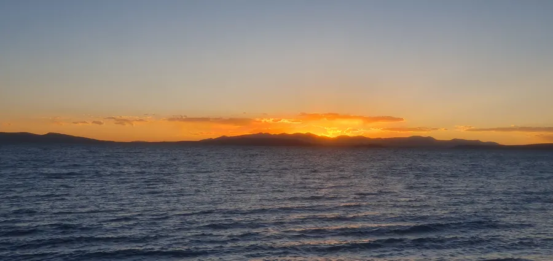
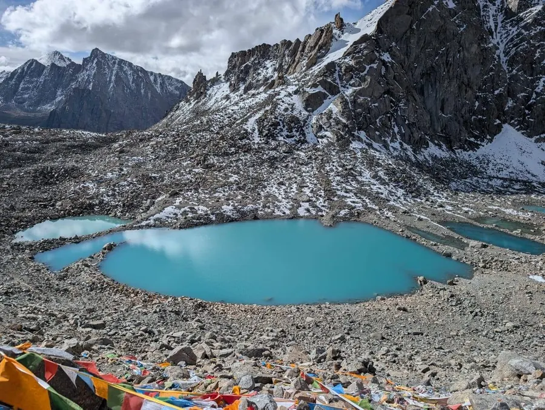
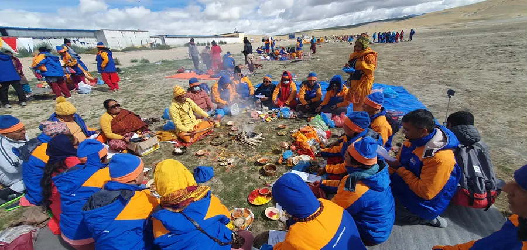
For Indian passports; NRI / foreign passports follow a 14-day version. Tap any day to expand. Timings may change with weather, roads and border rules.
Kathmandu → Kerung → Saga → Mansarovar → Darchen → Kora → Kathmandu
Our representative welcomes you at Tribhuvan International Airport and transfers you to the hotel. Evening yatra briefing — we collect original passports for the China group visa and hand over your Yatra kit (duffle bag, cap, jacket, trekking stick).
Morning darshan at Pashupatinath Temple, Boudhanath Stupa and Budhanilkantha (Sleeping Vishnu). Afternoon free for last-minute shopping. Visa processing continues.
Early departure along the Trishuli river and through Langtang National Park to Syabrubesi / Timure. Complete Nepal exit and Chinese immigration at Rasuwagadhi–Kerung, then a short 38 km drive to Kerung town. (If border timing requires, we overnight at Timure and cross next morning.)
A crucial rest day for your body to adjust to altitude before the plateau. Gentle walk to the ancient Pakpa Monastery and Kerung market. Drink plenty of water, avoid exertion.
Climb out of the Kerung valley onto the Tibetan Plateau, crossing Thong La and Labug La. Stunning views of Shishapangma and turquoise Peiku Tso lake before crossing the Brahmaputra (Yarlung Tsangpo) to reach Saga.
A long but breathtaking drive across the plateau via Mayum La. Your first darshan of Mount Kailash appears on the horizon before you descend to the shores of Lake Mansarovar. Overnight in a lakeside guesthouse — on Full-Moon departures, tonight you watch Purnima rise over the holy lake.
Sunrise holy bath in Lake Mansarovar, followed by puja and hawan on the shore. Vehicle parikrama of the lake with views of Rakshas Tal and Gurla Mandhata. Drive to Darchen, base of Mount Kailash. Arrange porters / ponies for the Kora.
Short drive to Yam Dwar (Tarboche), gateway of the Parikrama. Trek gently up the Lha Chu valley with Kailash's west face beside you. Dirapuk offers the closest, most dramatic view of the sheer north face of Kailash.
The most demanding and most rewarding day. Pre-dawn start, steady climb to Dolma La Pass with prayer flags fluttering, then descend past the emerald Gauri Kund (Parvati's lake) into the Lham Chu valley to Zuthulpuk — the cave monastery of Milarepa.
Easy walk out of the valley to complete the sacred Parikrama. Our vehicle waits to take you back to Darchen for lunch, then the long drive back to Saga. Celebrate — you have completed the Kailash Kora.
Retrace the plateau route with a final look at Shishapangma and Peiku Tso, descending into the greener Kerung valley — warmer air and thicker oxygen at last.
Exit China, re-enter Nepal and drive back to Kathmandu. Evening farewell dinner and certificate of Yatra completion.
Transfer to the airport for your onward flight, or extend your trip with a Muktinath darshan, Everest mountain flight or Nepal tour. Om Namah Shivaya.
| Location | Nights | Accommodation | Standard |
|---|---|---|---|
| Kathmandu | 3 | 3-star hotel (twin sharing) | Attached bath, hot water, Wi-Fi |
| Kerung | 3 | Hotel / lodge | Attached bath, hot water |
| Saga | 2 | Hotel | Attached bath, hot water |
| Lake Mansarovar | 1 | Lakeside guesthouse | Basic, shared toilet, dormitory-style |
| Darchen | 1 | Hotel | Attached bath (4-star upgrade available) |
| Dirapuk / Zuthulpuk | 2 | Very basic guesthouse | 4–5 bed shared rooms, no showers |
Licensed, experienced and personally invested in every pilgrim's safety and darshan.
Licensed by Nepal Tourism Board (NTB), NATTA and TAAN — authorised to obtain every Tibet permit for you.
High-altitude Nepali escorts and English-speaking Tibetan guides who know every ritual, route and rest stop.
Oxygen in every vehicle, daily SpO₂ checks, first-aid kit, gradual acclimatisation and evacuation plans.
Thousands have completed their Parikrama with us since 2008 — rated 4.9 on Google.
3-star hotels in Kathmandu; hotels in Kerung, Saga & Darchen; pilgrim guesthouses at Mansarovar and on the Kora.
Our own kitchen team cooks fresh Indian / Nepali meals — dal, rice, roti, sabzi, soup — three times a day.
Comfortable tourist vehicles / private bus in Nepal and Tibet, airport pickup and drop.
Puja & hawan arranged at Mansarovar; guides who explain the significance of every sacred site.
China group visa, Tibet Travel Permit, Alien's Travel Permit, Military Permit and entry tickets — all handled.
Duffle bag, cap, jacket and trekking stick provided to every pilgrim on arrival.

"At Kailash Trip Planner, we believe that a journey to Mount Kailash and Lake Mansarovar is far more than travel, it is a spiritual calling. Every pilgrim carries faith, emotions, and dreams, and our responsibility is to make that sacred journey comfortable, meaningful, and memorable. From the beginning, our vision has been to provide trusted guidance, honest service, and personal care to every traveler who chooses to journey with us. Thank you for placing your trust in us. We look forward to being part of your sacred journey."
"Incredibly well-managed for such a specialized and rare package. The Kerung border crossing was smooth and the team handled all Tibet entry formalities. Highly recommended for serious devotees."

"I personally wanted the bus route because I felt a pilgrimage should take time. It was not always comfortable, but that was part of the experience for me. In the end I was very satisfied."

"Probably one of the most physically tiring trips I've taken, but also one of the most meaningful. It was well guided without being overmanaged. I'm glad I experienced Kailash this way."

 Maya Devi ShresthaNepal
Maya Devi ShresthaNepal
 Sunita SharmaIndia
Sunita SharmaIndia
 Arun SubediNepal
Arun SubediNepal
 Milena NoachCosta Rica
Milena NoachCosta Rica
 Rajesh RajbanshiAustralia
Rajesh RajbanshiAustralia
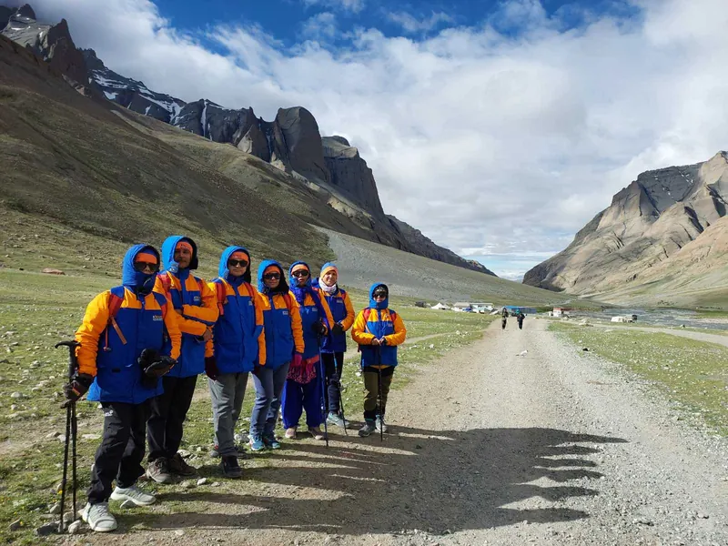
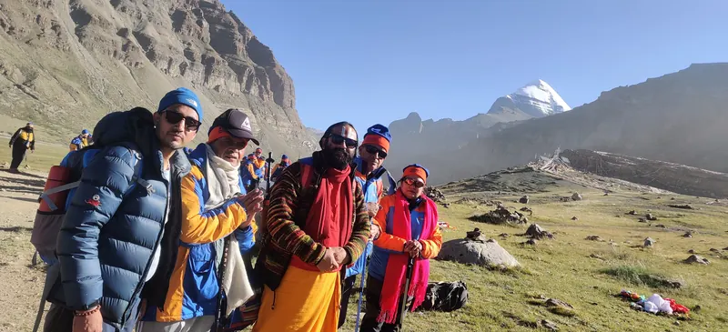
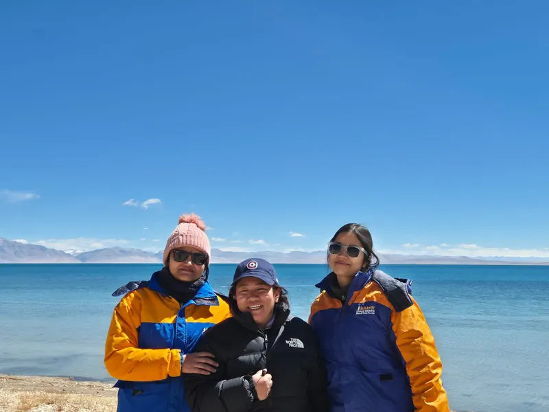
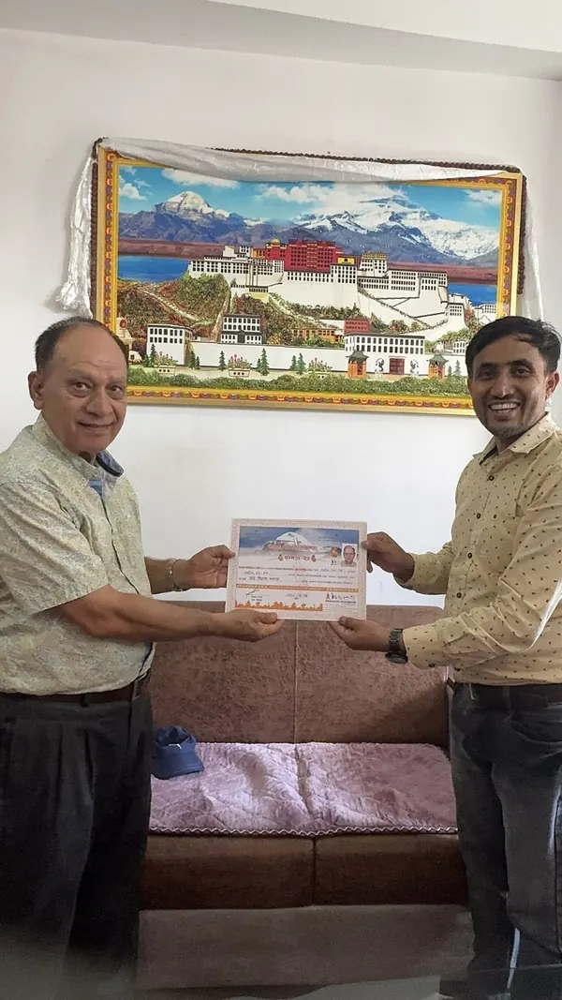
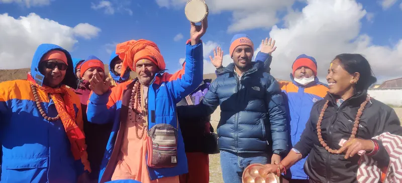
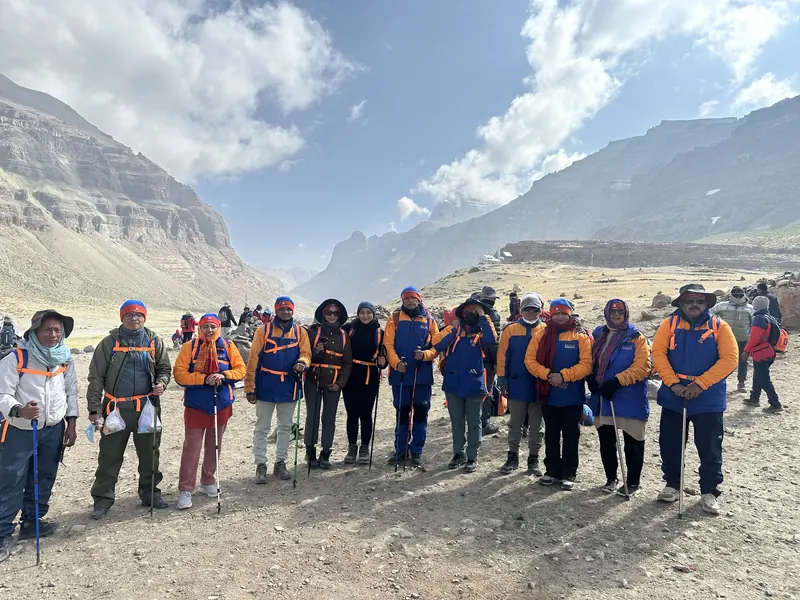
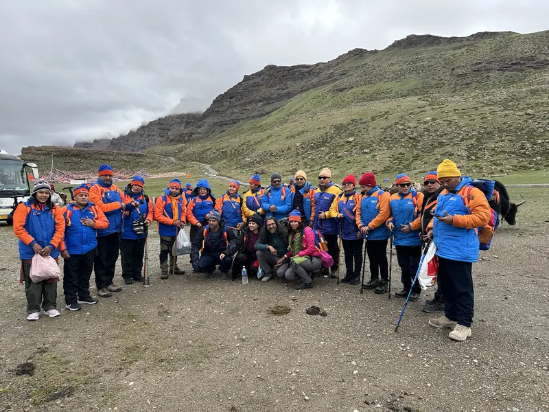
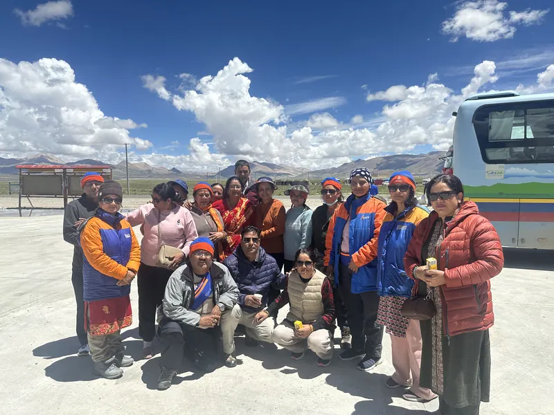
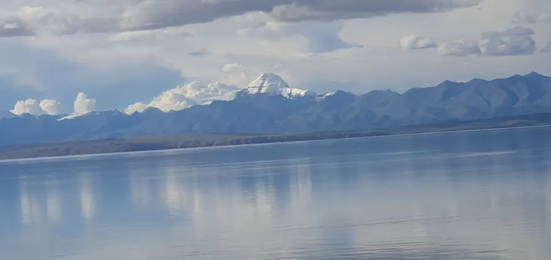
WhatsApp us your preferred departure and a colour scan of your passport.
USD 300 per person confirms your seat and locks the 2027 price.
Send your documents 45–60 days before; we apply for the visa and all Tibet permits.
Pay the balance before departure or on arrival in Kathmandu — bank transfer, card or cash.
Send us your details and we'll reply with available dates and an exact quote — usually within minutes. Om Namah Shivaya.